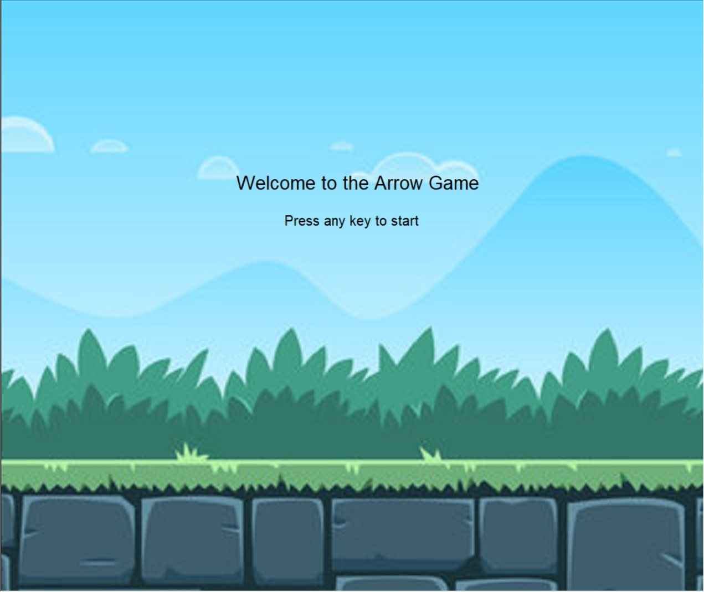
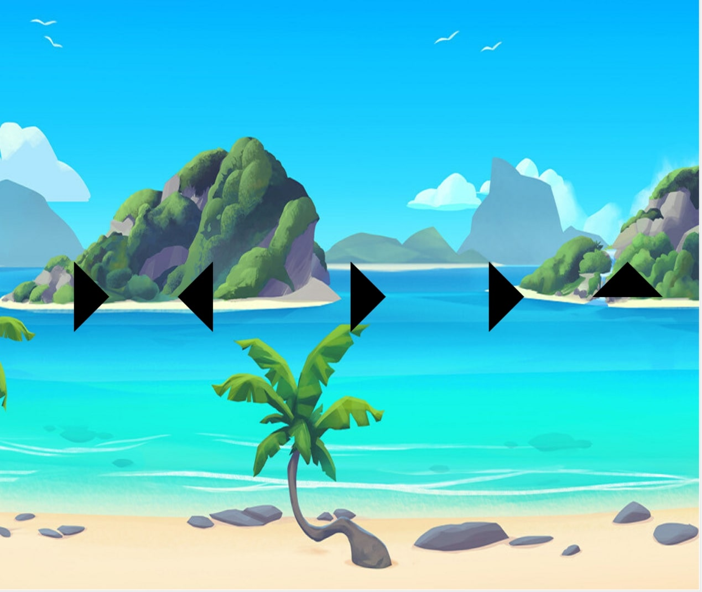

Home
Portfolio
About Me
This is my Portfolio Page!
Who Wants to be a Millionaire

In this game, the participant would be asked several questions about the world until they reached the million-dollar question.
Every time the user would get a question right, money would be drawn to represent the cash won, but if they lost, the game would finish.
Arrow Game


It was an interactive game where the user had to press a series of arrows using the arrow keys.
The levels get harder and the background changes as the user completes more and more rounds.
The directions of the arrows were randomized and the sequence would restart if the player made a mistake.
Adventure Story
My third project is a tale where our character goes on an adventure and travels through several environments on his horse.
He then finds a magic wand to take with him and when he encounters a bear, he uses it to turn the animal into a harmless bunny.
After his fight, he travels back home and rests for the next day.
A pHishy Fish Tank

In this project, we used our knowledge of debugging and phishing to help fix the fish tank monitors.
Through the assignment, we were able to locate the data breach and how to prevent it in the future.